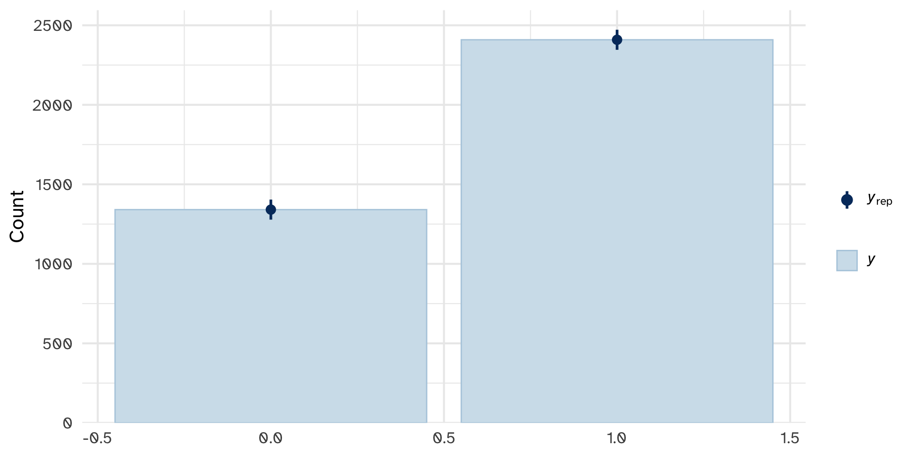
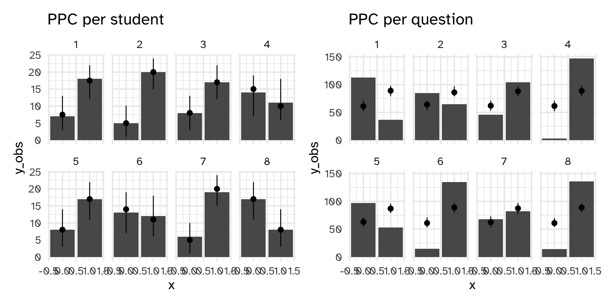
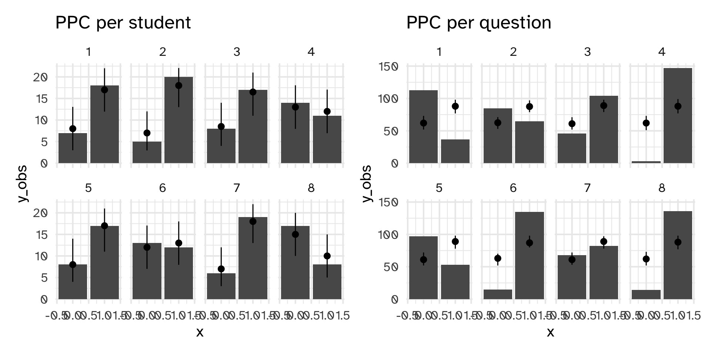
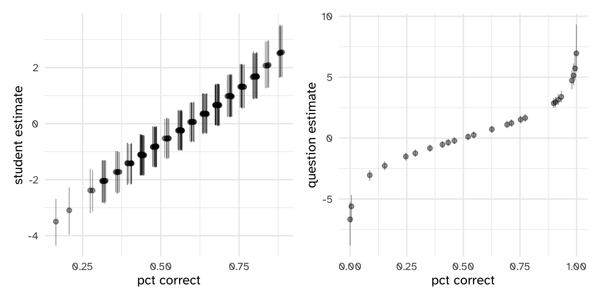
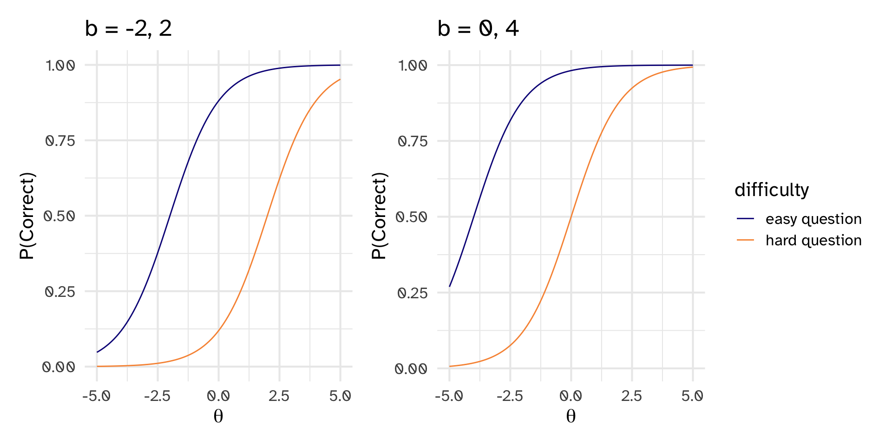
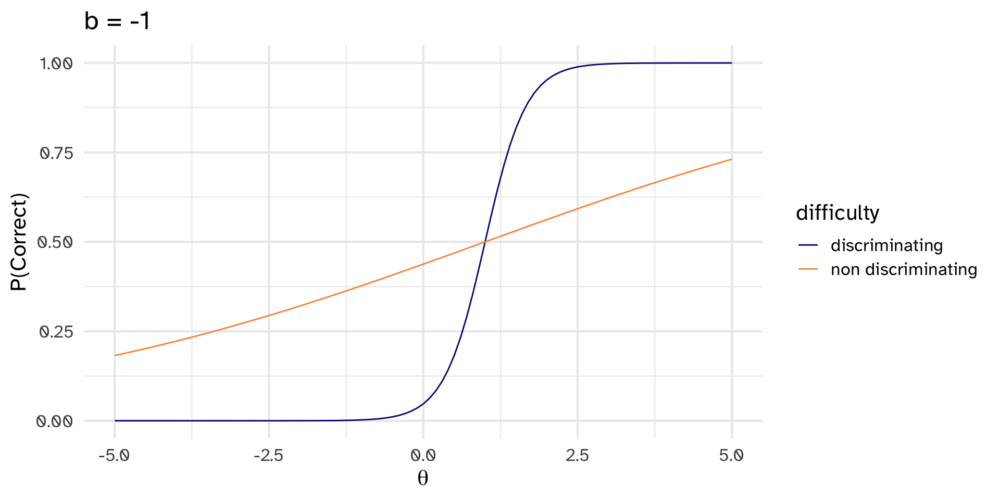
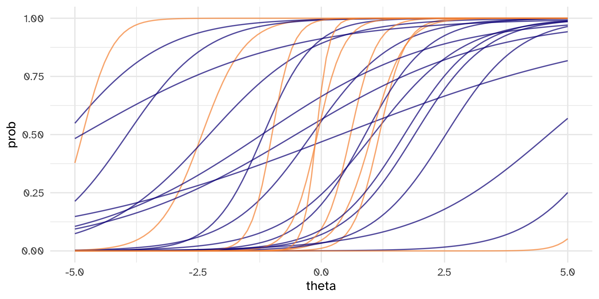

model alpha beta mean mode var sd
1 prior 0.5 0.5 0.5000000 0 and 1 1.25000e-01 0.353553391
2 posterior 2202.5 1548.5 0.5871768 0.587223259535876 6.46056e-05 0.008037761Case study: Item Response Theory
Day 27
Prof Amanda Luby
Carleton College
Stat 340 - Fall 2025
Data
- 150 students take a 25 question final exam
- Each question is scored as correct (1) or incorect (0)
What can we learn from this data?
- P(Correct)
- P(Correct) for students or questions
- Are some questions harder than others?
- Do scores reflect actual proficiency?
- Are some questions “better” at separating skill levels than others?
Week 2: Beta-Binomial Model
\[Y \sim \text{Binomial}(150*25, \pi)\] \[\pi \sim \text{Beta}(\alpha, \beta)\]
Warm-up
Someone needs to take the final exam late! What will our model predict for their score?
Week 7: Logistic Regression
\[Y_i \sim \text{Bernoulli}(\pi_i)\]
\[\pi_i = \beta_1 \mathbb{1}\{X_i = 1\} + \beta_2 \mathbb{1}\{X_i = 2\} + ... + \beta_{150} \mathbb{1}\{X_i = 150\}\]
Warning :The largest R-hat is 1.09, indicating chains have not mixed.
Running the chains for more iterations may help. See
https://mc-stan.org/misc/warnings.html#r-hat
Warning :Bulk Effective Samples Size (ESS) is too low, indicating posterior means and medians may be unreliable.
Running the chains for more iterations may help. See
https://mc-stan.org/misc/warnings.html#bulk-ess
Warning :Tail Effective Samples Size (ESS) is too low, indicating posterior variances and tail quantiles may be unreliable.
Running the chains for more iterations may help. See
https://mc-stan.org/misc/warnings.html#tail-essHow’d we do?
PP checks for students/questions tell a different story
Week 9: Hierarchical Logistic Regression
\[Y_i \sim \text{Bernoulli}(\pi_i)\]
\[\pi_i = \beta_{0i}\] \[\beta_{0i} \sim N(0, \sigma_\beta^2)\]
PP Check
PP Check
Solution: incorporate predictors for questions
\[Y_{ij} \sim \text{Bernoulli}(\pi_{ij})\]
\[\pi_i = \beta_{0i} + \beta_{0j}\] \[\beta_{0i} \sim N(0, \sigma_1^2)\]
\[\beta_{0j} \sim N(0, \sigma_2^2)\]
Check in:
How many parameters is this model estimating?
Comparison of predictions
Error in `model.frame.default()`:
! factor factor(student_id) has new level Amanda 1 2 3 4 5 6 7 8 9 10 11 12 13 14 15 16
0.59 0.60 0.58 0.60 0.60 0.59 0.60 0.59 0.59 0.60 0.57 0.59 0.58 0.59 0.59 0.58
17 18 19 20 21 22 23 24 25
0.58 0.59 0.59 0.59 0.59 0.59 0.60 0.60 0.62 1 2 3 4 5 6 7 8 9 10 11 12 13 14 15 16
0.25 0.44 0.69 0.98 0.34 0.90 0.54 0.91 0.01 0.52 0.98 0.99 0.46 0.41 0.29 0.16
17 18 19 20 21 22 23 24 25
0.63 0.93 0.76 0.10 1.00 0.92 0.72 0.78 0.01 Relationship between percent correct and predictors from model
I suspect some questions were better than others at sorting out the students who really understood the material from those who didn’t
Alternative formulation of the model:
\[Y_{ij} \sim \text{Bernoulli}(\pi_{ij})\]
\[\pi_{ij} = \text{logistic}(\theta_i + b_j)\]
\[\theta_i \sim N(\mu_\theta, \sigma_\theta^2)\]
\[b_j \sim N(b_j, \sigma_j^2)\]
Interpretation

Identifiability
How do we identify the model?
Without Bayes
- “Fix” one of the \(b\)’s as zero (reference category)
- Constrain all of the \(b\)’s to sum to a certain number
With Bayes:
\[\mu_\theta = 0\]
Adding “discrimination” parameter
In stan
model {
theta ~ normal(0, 1);
b ~ normal(0, sigma_b);
a ~ lognormal(0, sigma_a);
mu_b ~ cauchy(0, 5);
sigma_b ~ cauchy(0, 5);
sigma_a ~ cauchy(0, 5);
y ~ bernoulli_logit(a[jj] .* (theta[ii] - (b[jj] + mu_b)));
}Check:
Is this a GLM?
In stan
irt_model_code <- "
data {
int<lower=1> I; // number of students
int<lower=1> J; // number of questions
int<lower=1> N; // number of observations
array[N] int<lower=1, upper=I> ii; // student for observation n
array[N] int<lower=1, upper=J> jj; // question for observation n
array[N] int<lower=0, upper=1> y; // correctness for observation n
}
parameters {
real mu_b; // mean question difficulty
vector[I] theta; // ability for j - mean
vector[J] b; // difficulty for k
vector<lower=0>[J] a; // discrimination of k
real<lower=0> sigma_b; // scale of difficulties
real<lower=0> sigma_a; // scale of log discrimination
}
model {
theta ~ normal(0, 1);
b ~ normal(0, sigma_b);
a ~ lognormal(0, sigma_a);
mu_b ~ cauchy(0, 5);
sigma_b ~ cauchy(0, 5);
sigma_a ~ cauchy(0, 5);
y ~ bernoulli_logit(a[jj] .* (theta[ii] + (b[jj] + mu_b)));
}
"Fit the model
Using discrimination parameter to select items
a[1] a[2] a[3] a[4] a[5] a[6] a[7] a[8] a[9] a[10] a[11] a[12] a[13]
1.36 1.08 1.20 2.28 3.80 0.93 3.81 1.97 1.20 0.33 1.23 1.00 1.56
a[14] a[15] a[16] a[17] a[18] a[19] a[20] a[21] a[22] a[23] a[24] a[25]
2.97 1.36 1.34 0.51 4.71 3.75 0.72 3.24 0.48 0.56 7.79 3.56 - Item 4, 5, 7, 14, 18, 19, 21, 24, 25 all have \(a > 2\)
Designing a new test
Adding group-level covariates
\[\theta_i \sim N(\mu_\theta, \sigma_\theta^2)\]
\[\theta_i = \beta_1 X_{1i} + \beta_2 X_{2i}\]
\[b_j \sim N(b_j, \sigma_j^2)\]
Other examples of this type of modeling
- Latent scale of strong \(\leftrightarrow\) weak
- Locate submissions to a contest (questions) as well as the raters of those submissions (students)
- Locate sports teams (students) based on their performance against opponents (questions)
- Latent scale of liberal \(\leftrightarrow\) conservative
- Locate judges (students) on the scale based on their rulings (questions)
- Locate survey respondents (students) and survey questions
- Latent scale of cautious \(\leftrightarrow\) overconfident
- Locate forensic scientists (students) and pieces of evidence (questions) based on how often they are conclusive